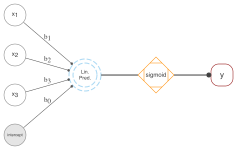

16 Parting Thoughts
All models are stardust.
As we wrap things up, let’s revisit some of the key points we’ve covered in this text and talk more about the modeling process in general.
16.1 How to Think About Models
When we first started our discussion of models in data science (Chapter 2), we talked about how a model is a simplified representation of reality. They start as ideas based on our intuition or experience, and they can sometimes be very simple ones. But at some point we start to think of them more formally, as a step toward testing those ideas in the real world. For statistics, machine learning, and data science more generally, models are then put into mathematical equations that give us a common language to reference them by. This does not have to be complex though. As an example, most of the models you’ve seen so far can be expressed as follows:

In words, this equation says that the target variable \(y\) is a function of the feature inputs \(X\), along with anything else that we don’t include in that set. This is a basic form of a model, and it’s the same for linear regression, logistic regression, and even random forests and neural networks1.
To aid our understanding beyond the math, we try to visually express models in a variety of ways2, as in the following images.


But even now these models are still at the idea stage, and we ultimately need to see how they work in the world, make predictions, and help us to make informed decisions. We’ve seen how to do this with linear models of various forms, and more unusual model implementations in the form of tree-based models, and even highly complex neural networks. These are the tools that allow us to take our ideas and turn them into something that can be used to make decisions, and that’s the real power of using models in data science.
16.2 More Models
When choosing a model, there’s a lot at your disposal, and we’ve only scratched the surface of what’s out there. Here are a few more models that you may encounter in your data science journey:
Statistical Models
In the statistical realm there are many more models that focus on different target distributions and types. For instance, we might use a beta distribution for targets between 0 and 1, ordinal logistic regression for ordinal targets, or survival models for time-to-event outcomes. Some models are field-specific, like two-stage least squares in econometrics. Beyond these, specific implementations will be found for time series (ARIMA, state space models), spatial data (kriging, CAR), and other special target considerations. Most of these models are essentially linear models with slight modifications.
Nonlinear models are another realm, which are a bit different from the nonlinear aspects of GLMs, GAMs, or deep learning. These models assume a specific (nonlinear) functional form and can be used to explore relationships that are not well captured by standard linear models. Examples range from something as simple as a polynomial regression or logistic growth model, to more complex biological and epidemiological models. These approaches are not as flexible as GAMs, or as predictive as neural networks, but they can potentially be useful in the right context.
In addition, there are ‘multivariate’ techniques like PCA, factor analysis, and similar ones which are still pretty widely used. There are also cases where the primary target is multivariate in nature, meaning a standard regression with multiple outcomes. These are more common within some areas like economics and psychology.
Machine Learning
In a purely machine learning context, you may find other models beyond those just mentioned in the statistical realm. However, as we have mentioned several times at this point, potentially any model can be used with machine learning, including statistical models. The machine learning context prioritizes prediction, and many models used would not usually produce standard statistical output like coefficients and uncertainty estimates by default. Examples include support vector machines, k-nearest neighbors regression, and other techniques. Most of these traditional ‘machine learning models’ have fallen out of favor due to their inflexibility with heterogeneous data types, and/or poor performance or efficiency compared to more modern approaches. However, even then, their spirit may live on in modern approaches.
You’ll also find models that focus on ranking, either with an outcome of ranks requiring a specific loss function (e.g., LambdaRank), or where ranking is used to simplify decision-making through post-estimation ranking of predictions (e.g., decile ranking, uplift modeling). In addition, you can find machine learning techniques extended to survival, ordinal, and other situations that are more common in the statistical realm.
Other areas of machine learning, like reinforcement learning, recommender systems, network analysis, and unsupervised learning techniques, provide more options that might be useful. Plenty is left for you to explore here as well!
Deep Learning
When it comes to deep learning, it seems there is a new model every day, and it’s hard to keep up. In general, convolutional neural networks are still the go-to for many types of computer vision tasks, while transformers are commonly used for natural language processing, but both have been applied to the other domain with success. Many ‘foundational’ models have been developed that allow you to apply pretrained models to your specific problem, and form the basis of modern AI. For tabular data as we’ve focused on here, you’ll typically see some variant of MLPs, often with embeddings for categorical features. Some have attempted transformers and CNNs here as well, but results are mixed.
The deep learning landscape also includes models like deep graphical networks, and deep Q learning for reinforcement learning, specific models for image segmentation (e.g., SAM), recurrent neural network variants for time-series data, and generative adversarial networks for a variety of tasks. Some specific techniques are falling out of favor, as transformer-based architectures are being applied to seemingly everything. But the field is dynamic, and it remains to be seen which methods will prevail in the long run.
16.3 Families of Models
While there are many models out there, even if we restrict the discussion to tabular data, we can group them in a fairly simple way that would cover most of the standard problems you’ll come across.
GLM and Related: Interpretable Insights
Here we have standard linear models with a focus on interpretability. Basically anything you’d find in a traditional stats or econometrics textbook would belong to this ‘family’.
- Includes: GLM, survival, ordinal, time-series, other distributions (beta, tweedie) - Best for: small data situations (samples and features), a baseline model, a causal model, post-model analysis of the results from more complex models - Primary strength: ease of estimation, interpretability, uncertainty estimation - Primary weakness: relatively poor prediction, may not capture natural data complexity without additional work
Penalized Regression and Friends: Predictive Progress
This family encompasses techniques that could be used as stepping stones toward machine learning. These include linear models enhanced with regularization, and advanced statistical models that deliberately incorporate nonlinearities and other complexities. Moreover, our emphasis begins to shift more to prediction in this context, though these models still provide relatively easier interpretation compared to the next group.
- Includes: lasso/ridge, mixed models, GAMs, Bayesian
- Best for: small to large data, possibly a relatively large number of features (esp. lasso), baseline model
- Primary strength: increased predictive capability while maintaining interpretability
- Primary weakness: interpretability can decrease, estimation difficulty can start to arise (convergence issues, uncertainty)
Trees and Nets: Champion’s Choice
This family includes tree-based models and neural networks, which are almost exclusively focused on predictive performance by default and represent a significant increase in complexity and computational requirements.
- Includes random forests, gradient boosting, neural networks (‘basis function models’)
- Best for: prediction/performance
- Primary strength: prediction, ability to handle potentially very large data and numbers of features
- Primary weakness: interpretability and uncertainty estimation
Thinking about families or groups of models can do a lot to help demystify the modeling process. You could come up with other schemas within a specific data domain or group of models, there’s no solid rule here. But it can be helpful to compartmentalize the models so that you don’t get overwhelmed by what are often minor details that won’t significantly impact the practical application.
The differences between the model families are not substantial, particularly between the first two. Specific models may only differ in the likelihood function, the penalty term, or just a shift in focus. The third group is a bit different, but it mostly just extends the application of nonlinear and interaction effects we can implement from the first groups, allowing for more computational capacity and flexibility. But if you’re new to modeling or dabbling in a new area, we think this grouping can quickly help you understand what you’re looking at and what you might want to use for a given problem. As you do more modeling, you’ll likely come up with your own.
16.3.1 A simple modeling toolbox
In practice, just a handful of techniques from this text can provide a lot of modeling power. Here’s a simple toolbox that can cover a lot of the ground you’d need in a typical data science project:
- Penalized Regression: Lasso, ridge, GAMs, mixed models and similar methods keep things linear while increasing predictive power and accommodating more features than their non-penalized counterparts. If you need to focus more on the explanatory and statistical side of things, you can use the standard GLM.
- Boosting/Tree-Based Models: At the time of this writing, boosting methods consistently deliver the best predictive performance for tabular data, and they are quite computationally efficient relative to deep learning techniques. That’s reason enough to know how to use them and keep them handy.
- Basic Deep Learning Model: A ‘simple’ deep learning model that incorporates embeddings for categorical and text features is a very powerful tool3. Additionally, using a deep learning approach can be integrated with other DL models that process different types of data, such as images or text, to enhance predictive performance. We’re still working toward an implementation of deep learning that can handle any tabular data we throw at it, but we’re not quite there yet.
Besides the models, it’s crucial to understand how to evaluate your models (cross-validation, metrics), how to interpret them (coefficients, SHAP, feature importance, uncertainty), and how to manage the data you’re working with. While we’ve discussed many topics in the text, there’s always more to learn, and more to practice.
16.4 How to Choose?
So how should we choose a specific model for our data? People love to say that ‘all models are wrong, but some are useful’5. We prefer to think of this a bit differently. There is no (necessarily) wrong model to use to answer your question, and there’s no guarantee that you would come to a different practical conclusion from using a simple correlation than you would from a complex neural network. But some models can be more useful depending on the context and the question you’re asking.
In the end, nothing says you can’t use multiple models to answer your question, and in fact, this is often a good idea assuming you have the time and resources to do so. As we’ve talked about, you can use a simple model to get a baseline, and then use a more complex model to see if you can improve on that. You can use a model that’s easy to interpret to get a sense of what’s going on, and then use a model that’s better at prediction. Even when your primary focus is prediction, you can often combine models to potentially get a better result.
And that’s the main thing – you don’t have to restrict yourself when it comes to modeling in data science, and you shouldn’t. The key is to understand what you’re trying to do, and to use the right tools for the job.
16.5 Choose Your Own Adventure
We’ve covered a lot of ground in this text, and we hope you’ve learned something new along the way. But there’s so much more out there for you to continue to explore. We hope that you’ll be able to take what you’ve learned here and apply it to your own work, and that you’ll continue to learn and grow as a data scientist.
So where do you go from here? The world of data science is vast – choose your own adventure!
Michael & Seth
Neural networks are a bit different in that they can be thought of as a series of (typically nested) functions that are applied to the data, but they can still be expressed in this form e.g., \(h(g(f(X)))\). The functions are more complex, and the parameters are estimated in a different way than typical tabular data models, but the basic idea is the same.↩︎
The LDA model depicted from Wikipedia was one of the early machine learning models for understanding natural language, and in particular to extract topics from text. It was a lot of fun to play with these, but it took a lot of pre-processing of text to get them to work at all, and they were performed pretty poorly in practice. That model may look like something peculiar, but it’s not much more than a flexible PCA on a matrix of word counts, or from another perspective, a Bayesian multinomial model.↩︎
Some seem to think that deep learning is only deep learning if it’s a transformer-based model or a convolutional neural network. However ‘deep’ is not formally defined, and we more simply see a deep learning model as just a model with multiple layers.↩︎
Until Python can go from model to visualizing the marginal effect with uncertainty in two or three lines of code (even with a Bayesian implementation), possibly on millions of observations in a few seconds, and even visualizing the derivatives (also with uncertainty estimates), it’s not going to be as easy to use as R for GAMs. But here’s hoping the current efforts continue there.↩︎
George Box, a famous statistician, said this in 1976.↩︎